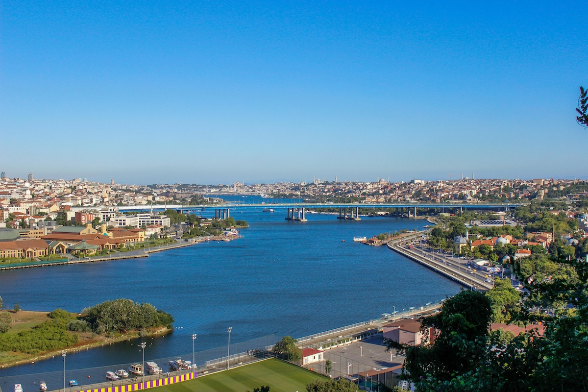

Pierre Loti Tepesi: Haliç Manzarasının En Güzel Kadrajı

İstanbul, fotoğrafçılar için neredeyse sınırsız görsel zenginlik sunan bir şehir. Tarih, doğa ve şehir yaşamının iç içe geçtiği bu büyülü atmosfer, her köşede farklı bir hikâye yakalama imkânı sağlar. Bu hikâyelerin en etkileyici sahnelerinden biri ise Pierre Loti Tepesi’dir. Haliç’e tepeden bakan bu eşsiz nokta, hem profesyonel fotoğrafçılar hem de fotoğraf meraklıları için İstanbul’un en ilham verici çekim alanlarından biridir.
Bu yazıda, Pierre Loti Tepesi’nin fotoğrafçılar için neden bu kadar özel olduğunu, hangi saatlerde çekim yapılması gerektiğini, hangi kompozisyonların öne çıktığını ve burada nasıl etkileyici kareler yakalayabileceğinizi detaylı şekilde inceleyeceğiz.
Pierre Loti Tepesi’nin Fotoğrafçılar İçin Önemi
Pierre Loti Tepesi, İstanbul’un tarihi dokusunu ve doğal manzarasını aynı kadrajda yakalayabileceğiniz nadir noktalardan biridir. Tepeden bakıldığında Haliç’in kıvrılarak uzanan yapısı, eski İstanbul mahalleleri, cami siluetleri ve yoğun şehir dokusu fotoğrafçılar için zengin bir görsel çeşitlilik sunar.
Burada çekilen fotoğrafların en önemli özelliği, İstanbul’un karakterini güçlü şekilde yansıtmasıdır. Şehrin tarihi atmosferi, sabah sisleri, gün batımı ışıkları ve akşam saatlerindeki şehir ışıkları her seferinde farklı bir sahne oluşturur.
Fotoğrafçılar için Pierre Loti Tepesi üç temel unsur sunar:
- Panoramik şehir manzarası
- Tarihi ve kültürel atmosfer
- Doğal ışığın dramatik etkileri
Bu üç unsur, doğru zaman ve doğru kompozisyonla birleştiğinde son derece etkileyici fotoğraflar ortaya çıkar.
Gün Doğumunda Fotoğraf Çekmek
Fotoğrafçılar için en özel zamanlardan biri gün doğumudur. Sabah erken saatlerde tepeye geldiğinizde şehrin henüz uyanmadığı sakin bir atmosferle karşılaşırsınız.
Haliç üzerinde oluşan hafif sis tabakası, fotoğraflara mistik bir hava katar. Özellikle uzun odaklı lenslerle çekilen karelerde sisin içinden çıkan minareler ve çatı siluetleri son derece etkileyici bir görüntü oluşturur.
Gün doğumu çekimlerinde dikkat edilmesi gerekenler:
- Tripod kullanmak
- Düşük ISO tercih etmek
- Altın saat ışığını yakalamak
- Geniş açı lens ile panoramik kadraj oluşturmak
Sabah saatlerinde ışık daha yumuşak olduğu için kontrast daha dengeli olur ve fotoğraflar daha doğal görünür.
Gün Batımında Altın Saat Büyüsü
Pierre Loti Tepesi’nin en popüler fotoğraf saatlerinden biri gün batımıdır. Güneş Haliç’in arkasında batarken şehir altın tonlarına bürünür. Bu an, fotoğrafçılar için adeta görsel bir şölen sunar.
Gün batımı çekimlerinde özellikle şu kadrajlar oldukça etkileyici olur:
- Haliç’in üzerinde gün batımı yansımaları
- Minare ve kubbelerin siluetleri
- Gökyüzündeki turuncu ve mor tonları
- Şehrin üzerinde oluşan dramatik bulutlar
Geniş açı lensler bu manzarayı yakalamak için idealdir. Aynı zamanda tele lens kullanarak uzaktaki detayları sıkıştırmak da oldukça etkileyici sonuçlar verebilir.
Gece Fotoğrafçılığı İçin İdeal Noktalardan Biri
Akşam saatlerinde Pierre Loti Tepesi farklı bir atmosfere bürünür. Haliç çevresindeki ışıklar yanmaya başladığında şehir adeta parlayan bir sahneye dönüşür.
Gece fotoğrafçılığı için burada yapılabilecek çekimler şunlardır:
- Uzun pozlama ile ışık yansımaları
- Şehir ışıklarıyla panoramik manzara
- Işık izleri ve trafik hareketleri
- Gökyüzü ve şehir kontrastı
Tripod kullanarak yapılan uzun pozlamalar özellikle su yüzeyindeki ışık yansımalarını daha dramatik hale getirir.
Kompozisyon Önerileri
Pierre Loti Tepesi’nde fotoğraf çekerken sadece manzarayı kadraja almak yerine güçlü kompozisyonlar oluşturmak önemlidir.
Fotoğrafçılar için bazı yaratıcı kompozisyon fikirleri:
Katmanlı kompozisyon
Ön planda ağaç dalları veya korkuluklar kullanarak arka plandaki Haliç manzarasını katmanlı bir şekilde gösterebilirsiniz.
İnsan unsuru eklemek
Manzaraya bakan bir insan silueti, fotoğrafın hikâyesini güçlendirir.
Doğal çerçeveleme
Ağaç dalları veya mimari yapılar kullanılarak kadraj içinde doğal çerçeveler oluşturulabilir.
Minimalist kadrajlar
Tele lens kullanarak şehirdeki tek bir minare, tek bir yapı veya tek bir tekneyi izole etmek güçlü minimalist fotoğraflar ortaya çıkarabilir.
Drone Fotoğrafçılığı İçin Potansiyel
Drone kullanabilen fotoğrafçılar için Pierre Loti Tepesi çevresi oldukça etkileyici hava fotoğrafları sunabilir. Yukarıdan bakıldığında Haliç’in kıvrımları, tarihi mahalleler ve yeşil alanlar farklı bir perspektif oluşturur.
Ancak drone kullanımı sırasında yerel kurallara ve uçuş izinlerine dikkat etmek gerekir.
Fotoğraf Ekipmanı Önerileri
Pierre Loti Tepesi’nde çekim yapacak fotoğrafçılar için ideal ekipmanlar şunlardır:
- Geniş açı lens (16–35 mm)
- Tele lens (70–200 mm)
- Tripod
- ND filtre
- Polarize filtre
Bu ekipmanlar hem manzara hem de detay çekimleri için büyük avantaj sağlar.
Fotoğrafçıların İlham Noktası
Pierre Loti Tepesi sadece bir manzara noktası değil, aynı zamanda fotoğrafçılar için ilham veren bir atmosfer sunar. Günün farklı saatlerinde değişen ışık, mevsimlere göre dönüşen renkler ve İstanbul’un tarihi silueti burada her zaman yeni bir hikâye yaratır.
Eğer İstanbul’da fotoğraf çekilecek yerler arıyorsanız, Pierre Loti Tepesi mutlaka listenizde olmalı. Burada çekilen her kare, İstanbul’un ruhunu ve karakterini güçlü bir şekilde yansıtır.
Doğru ışığı yakaladığınızda, sabırla doğru anı beklediğinizde ve kompozisyona dikkat ettiğinizde Pierre Loti Tepesi size unutulmaz fotoğraflar sunacaktır. Çünkü bazı şehirler vardır ki sadece görülmez, fotoğraflanır. İstanbul da tam olarak böyle bir şehirdir.